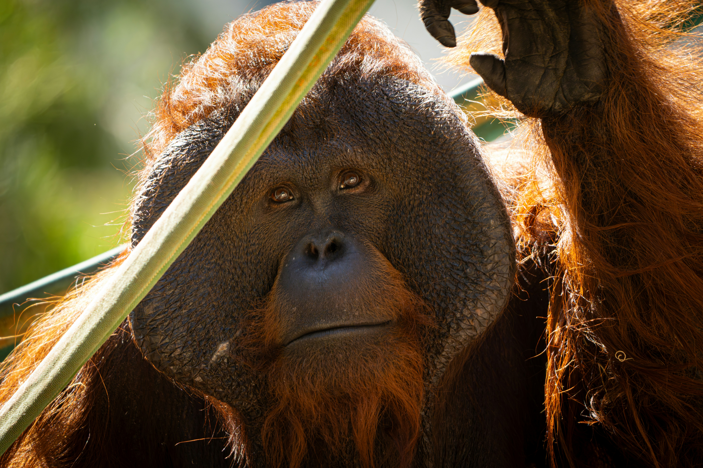
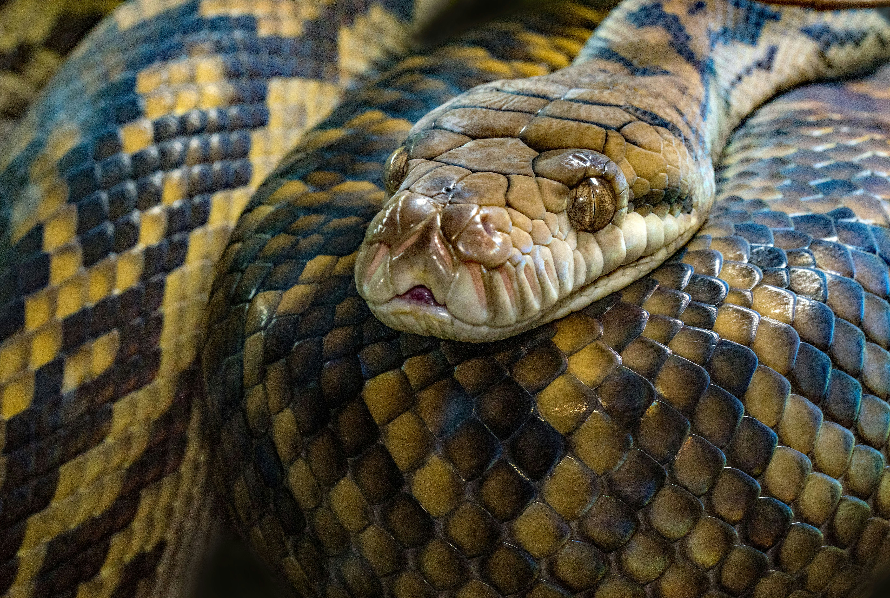
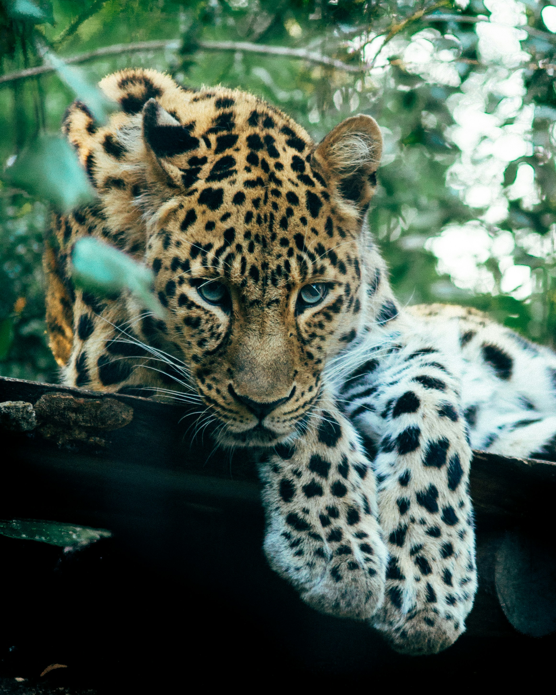
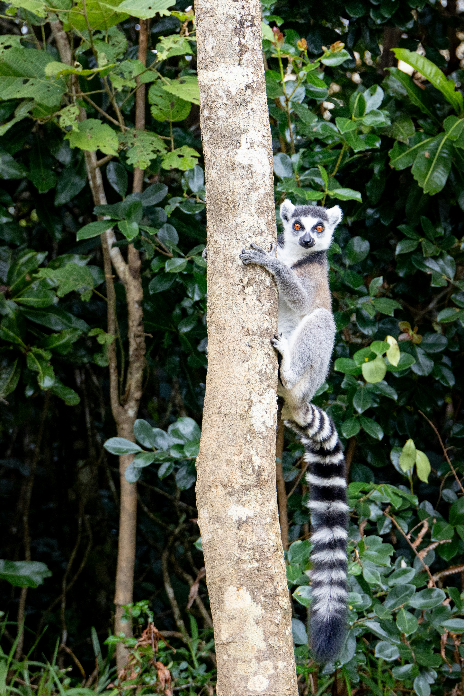

ממלכת הג'ונגל-

האורנגאוטן הוא קוף אדם אינטליגנטי במיוחד המאופיין בפרווה ג'ינג'ית עשירה. הם מבלים את רוב שעות היממה בצמרות העצים של יערות הגשם, ומשתמשים בענפים ובכלים שונים כדי להקל על חייהם בטבע.
אורנגטואן

זוחלים מרתקים אלו מותאמים בצורה מושלמת לחיי הצמחייה הסבוכה בג'ונגל. הודות לגמישותם המדהימה וחוש הריח המפותח שלהם, הם נחשבים לציידים שקטים ויעילים ביותר בסביבתם הטבעית.
נחש

היגואר הוא החתול הגדול ביותר ביבשת אמריקה. הוא בעל מבנה גוף שרירי וחזק, מתמחה בטיפוס מעולה על עצים, ובניגוד לחתולים אחרים – הוא גם שחיין מצטיין שאוהב מאוד מקווי מים.
יגואר

הלמורים הם פרימטים ייחודיים שמקורם באי מדגסקר. הם מתאפיינים בעיניים גדולות ומביעות, זנב ארוך ומפוספס, וחיים בחברות קבוצתיות תוך כדי תקשורת ענפה וקולנית ביניהם.